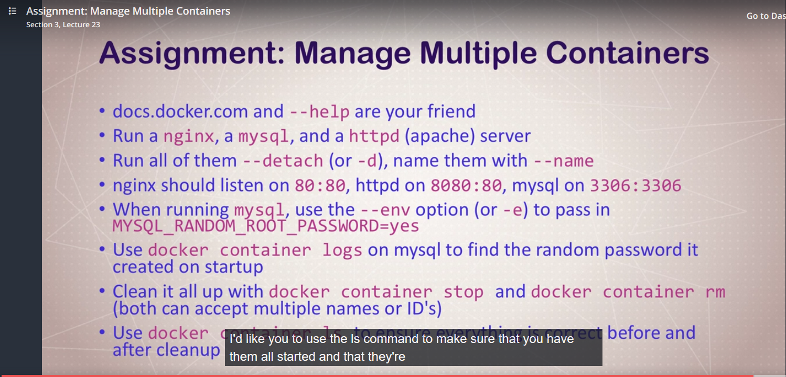

1

vdanev@ora-vsrv:~$ docker container run --publish 80:80 --detach --name webproxy nginx
efeedbfbca23f9ef441799b021cf6112a6b36a98c61d3b0cc704041c1ad93f63
vdanev@ora-vsrv:~$ docker container ls
CONTAINER ID IMAGE COMMAND CREATED STATUS PORTS NAMES
efeedbfbca23 nginx "nginx -g 'daemon of…" 10 seconds ago Up 10 seconds 0.0.0.0:80->80/tcp webproxy
vdanev@ora-vsrv:~$ docker container run --publish 8082:80 --detach --name webserver httpd
abe85d9c18dd1e111ff8b9ebdfc2218ea5fb6a7243b950708da0e69a66650b42
vdanev@ora-vsrv:~$ docker container ls
CONTAINER ID IMAGE COMMAND CREATED STATUS PORTS NAMES
abe85d9c18dd httpd "httpd-foreground" 8 seconds ago Up 6 seconds 0.0.0.0:8082->80/tcp webserver
efeedbfbca23 nginx "nginx -g 'daemon of…" 2 minutes ago Up 2 minutes 0.0.0.0:80->80/tcp webproxy
vdanev@ora-vsrv:~$ sudo docker container run --env MYSQL_RANDOM_ROOT_PASSWORD=yes --publish 3307:3306 --detach --name dbserver mysql
docker: Error response from daemon: Conflict. The container name "/dbserver" is already in use by container "3a055062f75b78f51b5d82092b3babc478b6f3b68172b126b90343f03a84872c". You have to remove (or rename) that container to be able to reuse that name.
See 'docker run --help'.
vdanev@ora-vsrv:~$ docker container ls -a
CONTAINER ID IMAGE COMMAND CREATED STATUS PORTS NAMES
3a055062f75b mysql "docker-entrypoint.s…" 6 minutes ago Exited (1) 6 minutes ago dbserver
abe85d9c18dd httpd "httpd-foreground" 12 minutes ago Up 12 minutes 0.0.0.0:8082->80/tcp webserver
efeedbfbca23 nginx "nginx -g 'daemon of…" 14 minutes ago Up 14 minutes 0.0.0.0:80->80/tcp webproxy
f95aa2710016 hello-world "/hello" 28 minutes ago Exited (0) 28 minutes ago agitated_shtern
vdanev@ora-vsrv:~$ docker container rm 3a0
3a0
vdanev@ora-vsrv:~$ sudo docker container run --env MYSQL_RANDOM_ROOT_PASSWORD=yes --publish 3307:3306 --detach --name dbserver mysql
df0d4d2738e23a15c71239e8d5ad687b16578ca460cee40f5e62f747f9f53046
vdanev@ora-vsrv:~$ docker container ls
CONTAINER ID IMAGE COMMAND CREATED STATUS PORTS NAMES
df0d4d2738e2 mysql "docker-entrypoint.s…" 6 seconds ago Up 5 seconds 33060/tcp, 0.0.0.0:3307->3306/tcp dbserver
abe85d9c18dd httpd "httpd-foreground" 12 minutes ago Up 12 minutes 0.0.0.0:8082->80/tcp webserver
efeedbfbca23 nginx "nginx -g 'daemon of…" 14 minutes ago Up 14 minutes 0.0.0.0:80->80/tcp webproxy
vdanev@ora-vsrv:~$ docker container logs df0
Warning: Unable to load '/usr/share/zoneinfo/zone1970.tab' as time zone. Skipping it.
GENERATED ROOT PASSWORD: aizo5eehaemeThaeghai4phievegho0t
2018-10-28T14:57:22.388681Z 10 [Warning] [MY-010315] [Server] 'user' entry 'mysql.infoschema@localhost' ignored in --skip-name-resolve mode.
vdanev@ora-vsrv:~$ docker container ls
CONTAINER ID IMAGE COMMAND CREATED STATUS PORTS NAMES
df0d4d2738e2 mysql "docker-entrypoint.s…" 6 minutes ago Up 6 minutes 33060/tcp, 0.0.0.0:3307->3306/tcp dbserver
abe85d9c18dd httpd "httpd-foreground" 18 minutes ago Up 18 minutes 0.0.0.0:8082->80/tcp webserver
efeedbfbca23 nginx "nginx -g 'daemon of…" 20 minutes ago Up 20 minutes 0.0.0.0:80->80/tcp webproxy
vdanev@ora-vsrv:~$ docker container stop dbserver webserver webproxy
dbserver
webserver
webproxy
vdanev@ora-vsrv:~$ docker container ls
CONTAINER ID IMAGE COMMAND CREATED STATUS PORTS NAMES
vdanev@ora-vsrv:~$ docker container ls -a
CONTAINER ID IMAGE COMMAND CREATED STATUS PORTS NAMES
df0d4d2738e2 mysql "docker-entrypoint.s…" 7 minutes ago Exited (0) 24 seconds ago dbserver
abe85d9c18dd httpd "httpd-foreground" 19 minutes ago Exited (0) 26 seconds ago webserver
efeedbfbca23 nginx "nginx -g 'daemon of…" 21 minutes ago Exited (0) 26 seconds ago webproxy
f95aa2710016 hello-world "/hello" 35 minutes ago Exited (0) 35 minutes ago agitated_shtern
vdanev@ora-vsrv:~$ docker container rm dbserver webserver webproxy agitated_shtern
dbserver
webserver
webproxy
agitated_shtern
https://docs.docker.com/engine/reference/commandline/run/#publish-or-expose-port--p---expose
Set environment variables (-e, --env, --env-file)
$ docker run -e MYVAR1 --env MYVAR2=foo --env-file ./env.list ubuntu bash
Use the -e, --env, and --env-file flags to set simple (non-array) environment variables in the container you’re running, or overwrite variables that are defined in the Dockerfile of the image you’re running.
You can define the variable and its value when running the container:
$ docker run --env VAR1=value1 --env VAR2=value2 ubuntu env | grep VAR
VAR1=value1
VAR2=value2
docker container run --env MYSQL_RANDOM_ROOT_PASSWORD=true -p 3307:3306 --d --name mysql mysql

1
docker container run --rm -it ubuntu:14.04 bash
Unable to find image 'ubuntu:14.04' locally
14.04: Pulling from library/ubuntu
027274c8e111: Pull complete
d3f9339a1359: Pull complete
872f75707cf4: Pull complete
dd5eed9f50d5: Pull complete
Digest: sha256:e6e808ab8c62f1d9181817aea804ae4ba0897b8bd3661d36dbc329b5851b5637
Status: Downloaded newer image for ubuntu:14.04
root@b4cf973c7fcd:/# export http_proxy=http://10.1.32.100:8081
root@b4cf973c7fcd:/# apt update
[root@7f0cb4501789 /]# curl --version
curl 7.29.0 (x86_64-redhat-linux-gnu) libcurl/7.29.0 NSS/3.34 zlib/1.2.7 libidn/1.28 libssh2/1.4.3
Protocols: dict file ftp ftps gopher http https imap imaps ldap ldaps pop3 pop3s rtsp scp sftp smtp smtps telnet tftp
Features: AsynchDNS GSS-Negotiate IDN IPv6 Largefile NTLM NTLM_WB SSL libz unix-sockets
docker container run --rm -it centos:7 bash
export http_proxy=http://10.1.32.100:8081
[root@7f0cb4501789 /]# curl --version
curl 7.29.0 (x86_64-redhat-linux-gnu) libcurl/7.29.0 NSS/3.34 zlib/1.2.7 libidn/1.28 libssh2/1.4.3
Protocols: dict file ftp ftps gopher http https imap imaps ldap ldaps pop3 pop3s rtsp scp sftp smtp smtps telnet tftp
Features: AsynchDNS GSS-Negotiate IDN IPv6 Largefile NTLM NTLM_WB SSL libz unix-sockets
Ключ --rm - позволяет после выхода из контейнера по команде ls -a не видеть запущенный ранее контейнер, т.е. он удаляется

1
The correct variants:
docker network create my_privat_net
vdanev@ora-vsrv:~$ docker container run -d --net my_privat_net --net-alias search elasticsearch:2
00a8151eb86069093ab67d4d8f33f21b87f6baa4a034f237cdbbb8ce6b7bc3b1
vdanev@ora-vsrv:~$ docker container run -d --net my_privat_net --net-alias search elasticsearch:2
5fe9775c32d1f2f35989545a95dce6e6c6800ebeee42988d51727b97dfbe3dc8
danev@ora-vsrv:~$ docker container ls
CONTAINER ID IMAGE COMMAND CREATED STATUS PORTS NAMES
5fe9775c32d1 elasticsearch:2 "/docker-entrypoint.…" About a minute ago Up About a minute 9200/tcp, 9300/tcp blissful_noether
00a8151eb860 elasticsearch:2 "/docker-entrypoint.…" About a minute ago Up About a minute 9200/tcp, 9300/tcp nervous_darwin
vdanev@ora-vsrv:~$ docker container run --rm --net my_privat_net alpine nslookup search
nslookup: can't resolve '(null)': Name does not resolve
Name: search
Address 1: 172.19.0.2 search.my_privat_net
Address 2: 172.19.0.3 search.my_privat_net
vdanev@ora-vsrv:~$ docker container run --rm --net my_privat_net centos curl -s search:9200
{
"name" : "Miles Warren",
"cluster_name" : "elasticsearch",
"cluster_uuid" : "YjxgAyH7QVmCgVkclA4zgQ",
"version" : {
"number" : "2.4.6",
"build_hash" : "5376dca9f70f3abef96a77f4bb22720ace8240fd",
"build_timestamp" : "2017-07-18T12:17:44Z",
"build_snapshot" : false,
"lucene_version" : "5.5.4"
},
"tagline" : "You Know, for Search"
}
Если запустить еще раз, то ответит уже другой сервер:
vdanev@ora-vsrv:~$ docker container run --rm --net my_privat_net centos curl -s search:9200
{
"name" : "Bucky III",
"cluster_name" : "elasticsearch",
"cluster_uuid" : "ztbcYHauRAK47c0Lid_4hg",
"version" : {
"number" : "2.4.6",
"build_hash" : "5376dca9f70f3abef96a77f4bb22720ace8240fd",
"build_timestamp" : "2017-07-18T12:17:44Z",
"build_snapshot" : false,
"lucene_version" : "5.5.4"
},
"tagline" : "You Know, for Search"
}
Differences between user-defined bridges and the default bridge
- User-defined bridges provide better isolation and interoperability between containerized applications.Containers connected to the same user-defined bridge network automatically expose all ports to each other, and no ports to the outside world. This allows containerized applications to communicate with each other easily, without accidentally opening access to the outside world.
- Containers can be attached and detached from user-defined networks on the fly.During a container’s lifetime, you can connect or disconnect it from user-defined networks on the fly. To remove a container from the default bridge network, you need to stop the container and recreate it with different network options.
vdanev@ora-vsrv:~/docker/udemy-docker-mastery/dockerfile-assignment-1$ docker build -t testnode .
Sending build context to Docker daemon 442.4kB
Step 1/11 : FROM node:6-alpine
---> ac75c1f95b80
Step 2/11 : ENV http_proxy "http://10.1.32.100:8081"
---> Running in 7ebb80de114f
Removing intermediate container 7ebb80de114f
---> f4ff41180c7b
Step 3/11 : ENV https_proxy "http://10.1.32.100:8081"
---> Running in 6a071797d693
emoving intermediate container 2c174f565ca4
---> dd9cfcf68dec
Successfully built dd9cfcf68dec
Successfully tagged testnode:latest
cat Dockerfile (at /home/vdanev/docker/udemy-docker-mastery/dockerfile-assignment-1):
# use this empty Dockerfile to build your assignment
# This dir contains a Node.js app, you need to get it running in a container
# No modifications to the app should be necessary, only edit this Dockerfile
# Overview of this assignment
# use the instructions from developer below to create a working Dockerfile
# feel free to add command inline below or use a new file, up to you (but must be named Dockerfile)
# once Dockerfile builds correctly, start container locally to make sure it works on http://localhost
# then ensure image is named properly for your Docker Hub account with a new repo name
# push to Docker Hub, then go to https://hub.docker.com and verify
# then remove local image from cache
# then start a new container from your Hub image, and watch how it auto downloads and runs
# test again that it works at http://localhost
# Instructions from the app developer
# - you should use the 'node' official image, with the alpine 6.x branch
FROM node:6-alpine
ENV http_proxy "http://10.1.32.100:8081"
ENV https_proxy "http://10.1.32.100:8081"
# - this app listens on port 3000, but the container should launch on port 80
# so it will respond to http://localhost:80 on your computer
EXPOSE 3000
# - then it should use alpine package manager to install tini: 'apk add --update tini'
RUN apk add --update tini
# - then it should create directory /usr/src/app for app files with 'mkdir -p /usr/src/app'
RUN mkdir -p /usr/src/app
# - Node uses a "package manager", so it needs to copy in package.json file
WORKDIR /usr/src/app
COPY package.json package.json
# - then it needs to run 'npm install' to install dependencies from that file
# - to keep it clean and small, run 'npm cache clean --force' after above
RUN npm install && npm cache clean --force
# - then it needs to copy in all files from current directory
COPY . .
# - then it needs to start container with command '/sbin/tini -- node ./bin/www'
# - in the end you should be using FROM, RUN, WORKDIR, COPY, EXPOSE, and CMD commands
CMD ["tini", "--", "node", "./bin/www"]
# Bonus Extra Credit
# this will not have you setting up a complete image useful for local development, test, and prod
# it's just meant to get you started with basic Dockerfile concepts and not focus too much on
# proper Node.js use in a container. **If you happen to be a Node.js Developer**, then
# after you get through more of this course, you should come back and use my
# Node Docker Good Defaults sample project on GitHub to change this Dockerfile for
# better local development with more advanced topics
# https://github.com/BretFisher/node-docker-good-defaults
home/vdanev/docker/udemy-docker-mastery/dockerfile-assignment-1
vdanev@ora-vsrv:~/docker/udemy-docker-mastery/dockerfile-assignment-1$ docker container run --rm -p 80:3000 testnode
WARNING: Tini has been relocated to /sbin/tini.
Please update your scripts to use /sbin/tini going forward.
/usr/bin/tini has been preserved for backwards compatibility in Alpine 3.4,
but WILL BE REMOVED in Alpine 3.5.
GET / 200 88.359 ms - 304
GET /stylesheets/style.css 200 5.513 ms - 119
GET /images/picard.gif 200 1.717 ms - 417700

danev@ora-vsrv:~$ docker images
REPOSITORY TAG IMAGE ID CREATED SIZE
testnode latest dd9cfcf68dec 18 minutes ago 63MB
<none> <none> 7d1eda5a3351 24 minutes ago 55.2MB
nginx-with-html latest 68f60a4ac6ae 13 hours ago 109MB
Переименовать теги для image:
vdanev@ora-vsrv:~$ docker tag testnode sol22/testing-node
vdanev@ora-vsrv:~$ docker images
REPOSITORY TAG IMAGE ID CREATED SIZE
testnode latest dd9cfcf68dec 20 minutes ago 63MB
sol22/testing-node latest dd9cfcf68dec 20 minutes ago 63MB
Загрузить образ в докер-хаб:
danev@ora-vsrv:~$ docker push sol22/testing-node
The push refers to repository [docker.io/sol22/testing-node]
c7cdd676d120: Pushed
22f501372b69: Pushed
8318d767dbbd: Pushed
1f567edfbac0: Pushed
a1546f78ff0e: Pushed
e56fda44d385: Mounted from library/node
4fb126c17f93: Mounted from library/node
a120b7c9a693: Mounted from library/node
latest: digest: sha256:ecc4c4c88653496b23c70c2f9b66fd9560f4cf732bfa458f7c13ca31b014a8d5 size: 1996

Удалить локально образ:
vdanev@ora-vsrv:~$ docker image ls
REPOSITORY TAG IMAGE ID CREATED SIZE
testnode latest dd9cfcf68dec 25 minutes ago 63MB
sol22/testing-node latest dd9cfcf68dec 25 minutes ago 63MB
<none> <none> 7d1eda5a3351 31 minutes ago 55.2MB
nginx-with-html latest 68f60a4ac6ae 14 hours ago 109MB
sol22/nginx-with-html latest 68f60a4ac6ae 14 hours ago 109MB
customnginx latest deedeca2941b 14 hours ago 108MB
<none> <none> d2b7239dfe10 14 hours ago 108MB
<none> <none> a366692bf243 14 hours ago 55.3MB
mysql latest 2dd01afbe8df 7 days ago 485MB
httpd latest 55a118e2a010 7 days ago 132MB
ubuntu 14.04 f216cfb59484 13 days ago 188MB
ubuntu latest ea4c82dcd15a 13 days ago 85.8MB
nginx latest dbfc48660aeb 2 weeks ago 109MB
debian stretch-slim 4b4471f624dc 2 weeks ago 55.3MB
centos 7 75835a67d134 3 weeks ago 200MB
centos latest 75835a67d134 3 weeks ago 200MB
nginx alpine aae476eee77d 4 weeks ago 17.7MB
node 6-alpine ac75c1f95b80 7 weeks ago 55.2MB
alpine latest 196d12cf6ab1 7 weeks ago 4.41MB
hello-world latest 4ab4c602aa5e 7 weeks ago 1.84kB
elasticsearch 2 5e9d896dc62c 8 weeks ago 479MB
debian latest eb03746b21f3 2 years ago 125MB
vdanev@ora-vsrv:~$ docker image rm sol22/testing-node
Untagged: sol22/testing-node:latest
Untagged: sol22/testing-node@sha256:ecc4c4c88653496b23c70c2f9b66fd9560f4cf732bfa458f7c13ca31b014a8d5
Упс- порт 80 занят другим запущенным контейнером:
vdanev@ora-vsrv:~$ docker container run --rm -p 80:3000 sol22/testing-node
Unable to find image 'sol22/testing-node:latest' locally
latest: Pulling from sol22/testing-node
Digest: sha256:ecc4c4c88653496b23c70c2f9b66fd9560f4cf732bfa458f7c13ca31b014a8d5
Status: Downloaded newer image for sol22/testing-node:latest
docker: Error response from daemon: driver failed programming external connectivity on endpoint flamboyant_chaplygin (28f938288a5fa1bddaf862aefbe80fe91d2732dadfa3f215c9df829b0aceba36): Bind for 0.0.0.0:80 failed: port is already allocated.
vdanev@ora-vsrv:~$
Запустить контейнер из образа на хабе:
vdanev@ora-vsrv:~$ docker container run --rm -p 80:3000 sol22/testing-node
WARNING: Tini has been relocated to /sbin/tini.
Please update your scripts to use /sbin/tini going forward.
/usr/bin/tini has been preserved for backwards compatibility in Alpine 3.4,
but WILL BE REMOVED in Alpine 3.5.
GET / 304 95.528 ms - -
GET /stylesheets/style.css 304 2.618 ms - -
GET /images/picard.gif 304 0.822 ms - -
GET / 304 5.640 ms - -
GET /stylesheets/style.css 304 1.216 ms - -
GET /images/picard.gif 304 0.410 ms - -
GET / 304 5.986 ms - -
GET /stylesheets/style.css 304 0.311 ms - -
Все работает:


vdanev@ora-vsrv:~$ docker container run -d --name postgres -p 5432:5432 -e http_proxy=http://10.1.32.100:8080 -v postgres:/var/lib/postgresql/data postgres:9.6.1
Unable to find image 'postgres:9.6.1' locally
9.6.1: Pulling from library/postgres
5040bd298390: Pull complete
...
Digest: sha256:0842a7ef786aa2658623085160cb38451eb3d40856e7d222ae0069b6e6296877
Status: Downloaded newer image for postgres:9.6.1
ca35482b379bb55f9db21c1537fda9133a2b9cded5a13889a5528ed1e8b7d149
vdanev@ora-vsrv:~$ docker container ls
CONTAINER ID IMAGE COMMAND CREATED STATUS PORTS NAMES
ca35482b379b postgres:9.6.1 "/docker-entrypoint.…" 12 seconds ago Up 11 seconds 0.0.0.0:5432->5432/tcp postgres
23e3e0ee2cbb nginx "nginx -g 'daemon of…" 3 hours ago Up 3 hours 0.0.0.0:8082->80/tcp nginx2
vdanev@ora-vsrv:~$ docker container logs ca35
The files belonging to this database system will be owned by user "postgres".
This user must also own the server process.
...
LOG: autovacuum launcher shutting down
waiting for server to shut down....LOG: shutting down
LOG: database system is shut down
done
server stopped
PostgreSQL init process complete; ready for start up.
LOG: database system was shut down at 2018-11-02 09:54:48 UTC
LOG: MultiXact member wraparound protections are now enabled
LOG: database system is ready to accept connections
LOG: autovacuum launcher started
danev@ora-vsrv:~$ docker container run -d --name postgres2 -p 5432:5432 -e http_proxy=http://10.1.32.100:8080 -v postgres:/var/lib/postgresql/data postgres:9.6.2
Unable to find image 'postgres:9.6.2' locally
9.6.2: Pulling from library/postgres
10a267c67f42: Pull complete
..
Digest: sha256:5284ba74a1065e34cf1bfccd64caf8c497c8dc623d6207b060b5ebd369427d34
Status: Downloaded newer image for postgres:9.6.2
04f6d4023e7681c283a8ef82c06e5ff1cb2619145badff28db9dfc23e32f5671
vdanev@ora-vsrv:~$ docker container ls
CONTAINER ID IMAGE COMMAND CREATED STATUS PORTS NAMES
04f6d4023e76 postgres:9.6.2 "docker-entrypoint.s…" 19 seconds ago Up 19 seconds 0.0.0.0:5432->5432/tcp postgres2
23e3e0ee2cbb nginx "nginx -g 'daemon of…" 3 hours ago Up 3 hours 0.0.0.0:8082->80/tcp nginx2
vdanev@ora-vsrv:~$ docker volume ls
DRIVER VOLUME NAME
local 11aedc88a6f8bd1bca7400eb97e3d128aa026d9192875bdb4d1fbfcb61c9ff50
...
local mysql-db
local postgres
danev@ora-vsrv:~$ docker container logs -f postgres2
LOG: database system was shut down at 2018-11-02 10:19:24 UTC
LOG: MultiXact member wraparound protections are now enabled
LOG: autovacuum launcher started
LOG: database system is ready to accept connections
-f command so that it keeps watching as it runs
vdanev@ora-vsrv:~$ docker container logs 04f
LOG: database system was shut down at 2018-11-02 10:19:24 UTC
LOG: MultiXact member wraparound protections are now enabled
LOG: autovacuum launcher started
LOG: database system is ready to accept connections

1
vdanev@ora-vsrv:~/docker/udemy-docker-mastery/bindmount-sample-1$ docker run -p 80:4000 -e http_proxy=http://10.1.32.100:8081 -e https_proxy=http://10.1.32.100:8081 -v $(pwd):/site bretfisher/jekyll-serve
The dependency tzinfo-data (>= 0) will be unused by any of the platforms Bundler is installing for. Bundler is installing for ruby but the dependency is only for x86-mingw32, x86-mswin32, x64-mingw32, java. To add those platforms to the bundle, run `bundle lock --add-platform x86-mingw32 x86-mswin32 x64-mingw32 java`.
Fetching gem metadata from https://rubygems.org/...........
Fetching gem metadata from https://rubygems.org/.
Resolving dependencies...
Using public_suffix 3.0.3
...
Installing minima 2.5.0
Bundle complete! 4 Gemfile dependencies, 29 gems now installed.
Bundled gems are installed into `/usr/local/bundle`
Configuration file: /site/_config.yml
Deprecation: The 'gems' configuration option has been renamed to 'plugins'. Please update your config file accordingly.
Source: /site
Destination: /site/_site
Incremental build: disabled. Enable with --incremental
Generating...
Jekyll Feed: Generating feed for posts
done in 0.513 seconds.
Auto-regeneration: enabled for '/site'
Server address: http://0.0.0.0:4000/

Редактируем текст:

В файле ниже и сохраняем:
/docker/udemy-docker-mastery/bindmount-sample-1/_posts/2017-03-05-welcome-to-jekyll.markdown
Процесс обнаруживает изменившиеся файлы...

Рефреш браузера показывает эти изменения:

Это благодаря возможностям Jekyll — генератор статичных сайтов:

df